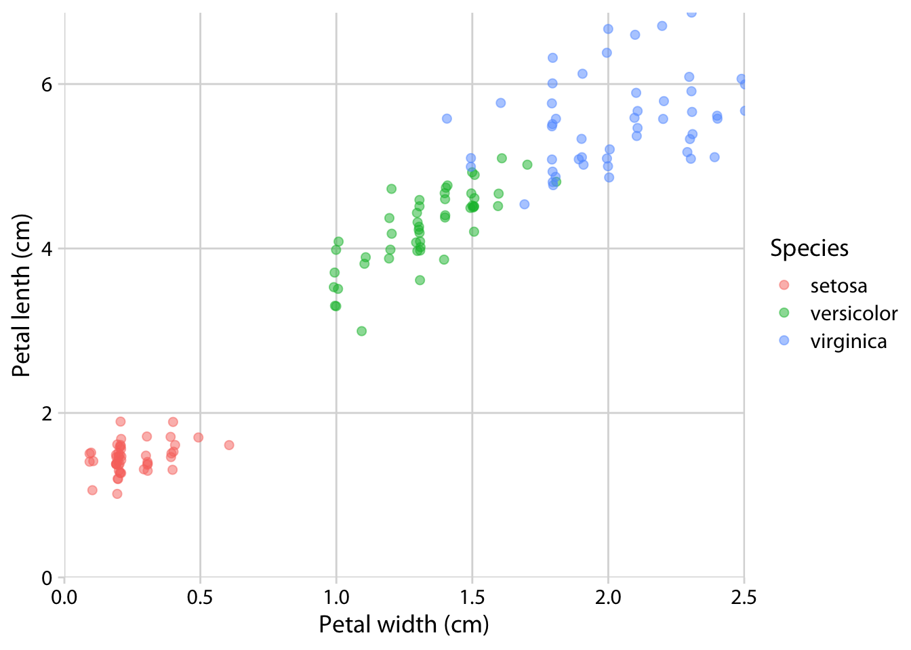

2 Iris Analysis
Analyzing and visualizing the Iris data set.
2.1 Load data & Group species
The data is loaded and then the species are grouped.
# ------------------------------------------------------------------------------
# Group iris data by species
# March 21, 2023
# TS O'Leary
# ------------------------------------------------------------------------------
# Description -----
# Load iris data and group by species and save as a rds file
# Load libraries
library(tidyverse)
# Load data
dat <- read_csv(here::here("data/raw/iris.csv"))
# Analyze data
dat <- dat %>%
group_by(species)
# Save data
saveRDS(dat, here::here("data/processed/species_grouped.rds"))2.2 Petal measurements
Scatter plot of the petal measurements.
# ------------------------------------------------------------------------------
# Iris petal data plotted
# March 21, 2023
# TS O'Leary
# ------------------------------------------------------------------------------
# Description ----
# Create a histogram of the counted species.
# Load libraries
library(tidyverse)
# Load data
dat <- readRDS(here::here("data/processed/iris_species_grouped.rds"))
# Scatter plot of petal measurements
# Small jitter included to visualize overlapping points
dat %>%
ggplot() +
geom_jitter(
aes(
x = Petal.Width,
y = Petal.Length,
color = Species
),
alpha = 0.5,
width = 0.01,
size = 2
) +
coord_cartesian(
expand = FALSE,
xlim = c(0, NA),
ylim = c(0, NA)
) +
labs(
x = "Petal width (cm)",
y = "Petal lenth (cm)"
) +
cowplot::theme_minimal_grid(font_family = "Myriad Pro")
# Save plot
cowplot::ggsave2(here::here("output/figs/iris_petal_plot.tiff"),
height = 5,
width = 7
)